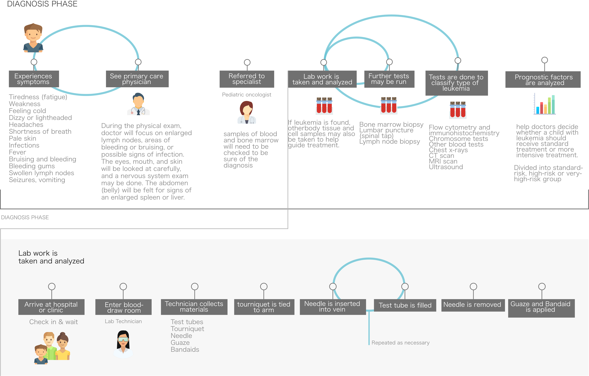
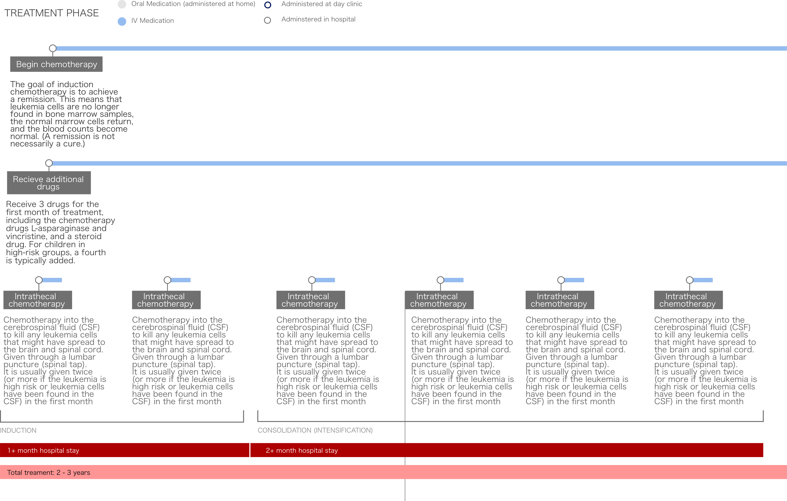
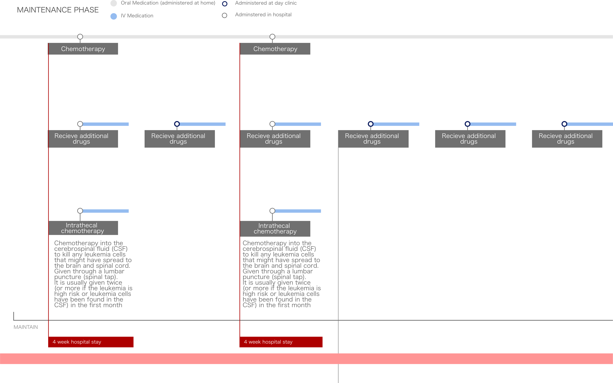

How might we
How might we improve comfort, compliance, and happiness for children whose treatment necessitates an extended stay in the hospital?
Stakeholder & Experience Mapping
I came into this project knowing I wanted to work on something related to pediatrics and hospitals, but wasn't exactly sure what. My preliminary research taught me that the average length of a pediatric hospital stay is 17.4 days and that the most common pediatric cancer diagnosis is Leukemia. I used that information as a jumping off point.

Stakeholder Map
I created a stakeholder map to understand the different actors and spaces at play in the situation. I also mapped their interactions (with each other and with places) and sought to understand what different stakeholders are thinking and feeling.
Experience Map
I then began intensive research into the treatment of Leukemia. I pin-pointed the different steps in the process, particularly focusing on those for which the child is present, and mapped them. The treatment of Leukemia happens over a period of many years, but it is relatively similar across different hospitals and cases.
 